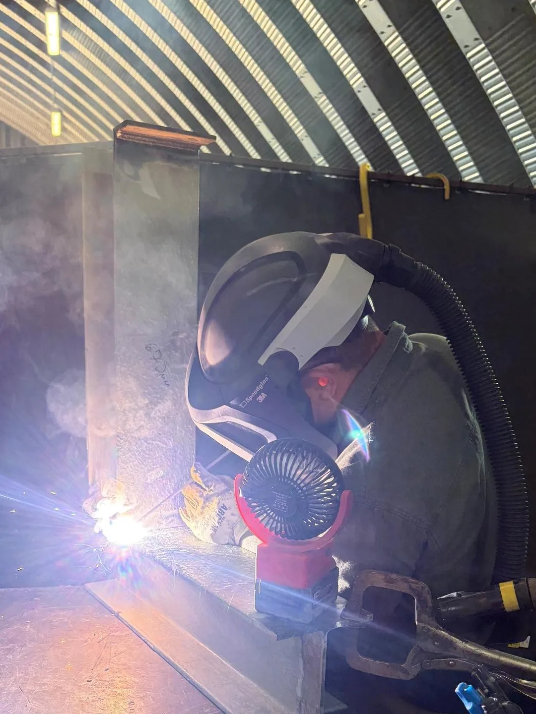

Work close to home
The shop will be in Burin, serving the Burin Peninsula. The aim is to keep industrial welding and fabrication work on the peninsula, done locally and done right.
Dracon is building a welding and fabrication shop in Burin. There are no positions open today. When hiring begins, we will be looking for people who take pride in the trade and take safety seriously.
Dracon Welding Services Ltd is owned and operated by Donald Drake, a Red Seal welder with more than 20 years in the trade and 16 years as a certified Red Seal welder. The shop at 5A Ropewalk Lane in Burin will be complete in Q1 2027, with move-in in Q2 2027. Dracon services begin Q3 2027. This site is for information purposes.
This page is for people who may want to work here once the shop is up and running. Nothing is being hired for now. If the work sounds like a fit, you are welcome to send a résumé and tickets to be kept on file.
Safety will be built into daily work at the Burin shop, from the first day. That is how Dracon intends to operate:
CWB W47.1 and ISO 9001 are the path forward; they are not yet held. Pipe and pressure work will be done only under a client's own procedures. More on these plans is on the Quality & Safety page.

These are the kinds of roles we expect to hire for as the shop opens and work ramps up. Timing will depend on the work ahead. There are no openings now, and this is not a posting for a specific job.
Design and drafting work, when it is needed, will be done through K2 Designs Ltd, a Dracon Group company (incorporation in progress). That is another kind of role we expect to hire for in time.
Tickets matter, and so does attitude. We will be looking for people who:
There are no positions open now. If you would like to be considered when hiring begins, email your résumé and trade tickets to dracon@draconk2.com. You can also reach Dracon at draconwelding@gmail.com or 709-277-0473.
Dracon Welding Services LtdRésumés will be kept on file for when hiring begins. They are used only by Dracon and are never shared or sold. This site does not collect résumés through a form. To have your information removed, email dracon@draconk2.com and ask. See Privacy for more.
Dracon Welding Services Ltd is an equal opportunity employer.